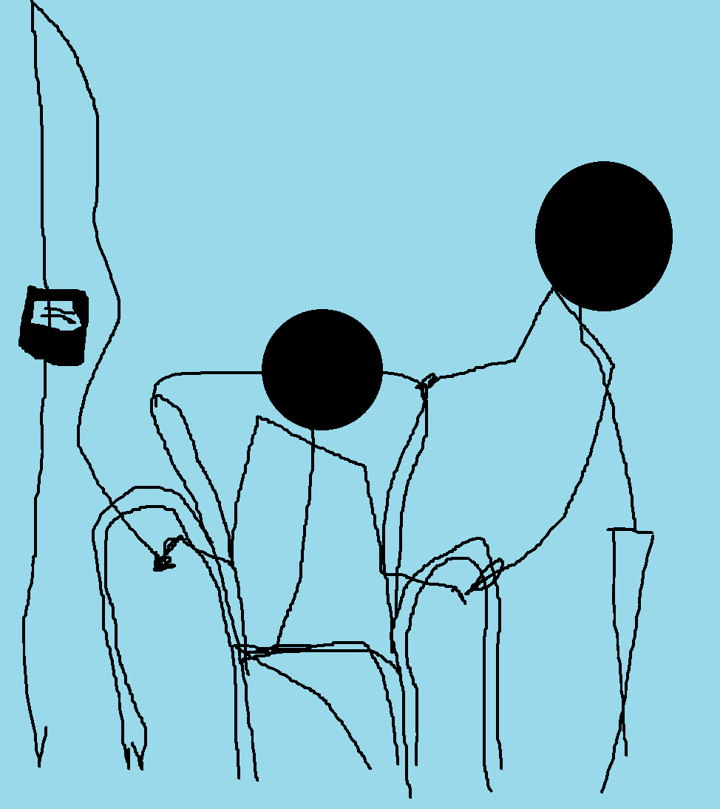
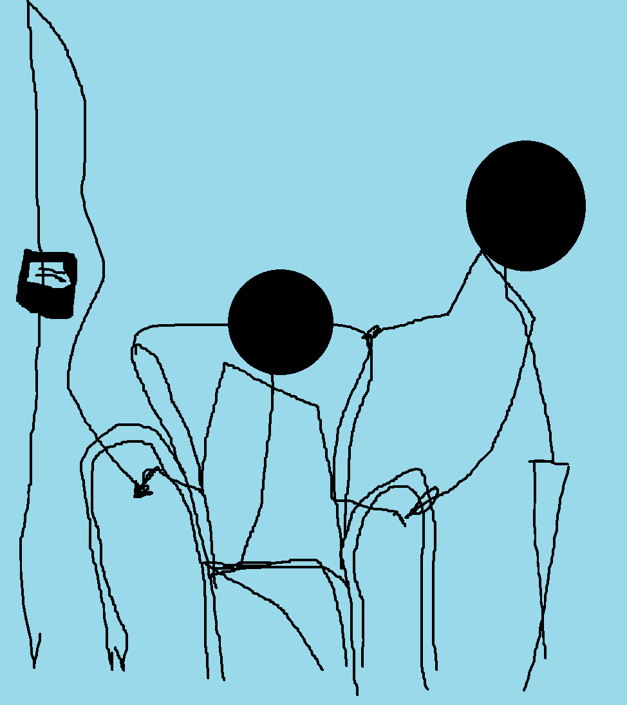

Our Services
At our Medical Centre, we offer a so-called comprehensive range of healthcare services aimed at meeting the *bare minimum* needs of our community.
General Practitioner (GP) Services: Our GPs provide whirlwind consultations, perfunctory medical checks, and referrals to specialists that may leave you questioning if they exist.
Practice Nursing: Our skilled but stretched-thin nurses offer wound care, vaccinations, and chronic disease management that’s as good as the system allows.